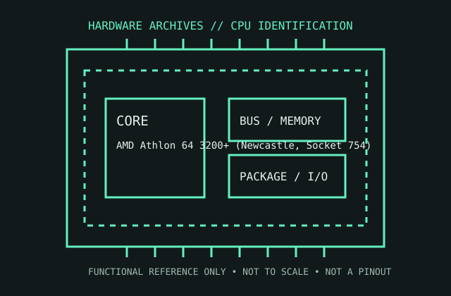

[ AMD GENERATIONS // IDENTIFIED COMPONENT ]
AMD Athlon 64 3200+ (Newcastle, Socket 754)
This Newcastle Athlon 64 3200+ is a 2.0 GHz single-core Socket 754 processor with an integrated single-channel memory controller and AMD64 support.

MODEL IDENTIFICATION: AMD Athlon 64 3200+ (Newcastle, Socket 754). Read the full top marking/OPN, speed grade, package, and stepping from the physical part; do not transfer specifications across similarly named revisions.
Recorded specifications
| Cataloged part | AMD Athlon 64 3200+ (Newcastle, Socket 754) |
|---|---|
| Era / family | AMD Athlon 64 / K8 generation, 2004; Newcastle, ADA3200AEP4AX identification. |
| Key specifications | 2.0 GHz core; one core/one thread; 512 KB L2 cache; Socket 754; integrated single-channel DDR memory controller; HyperTransport link at 800 MHz clock (1.6 GT/s); 89 W thermal design power for this 130 nm part. |
| Interface / fit | Requires Socket 754 board and DDR memory; confirm BIOS recognition and the board’s specified HyperTransport/memory configuration. Socket 754 and Socket 939 Athlon 64 processors are not interchangeable. |
| Variants / identification | 3200+ is a performance rating, not a 3.2 GHz clock. Other 3200+ Athlon 64 models use different core revisions, sockets, memory-channel support, and thermal ratings; verify the ADA3200AEP4AX OPN. |
Compatibility and service notes
- Requires Socket 754 board and DDR memory; confirm BIOS recognition and the board’s specified HyperTransport/memory configuration. Socket 754 and Socket 939 Athlon 64 processors are not interchangeable.
- 3200+ is a performance rating, not a 3.2 GHz clock. Other 3200+ Athlon 64 models use different core revisions, sockets, memory-channel support, and thermal ratings; verify the ADA3200AEP4AX OPN.
- Record the full OPN, especially socket/core suffix, and inspect the PGA pins. Confirm cooler retention and BIOS/AGESA-era board support before applying power; document RAM type and channel arrangement.
- Before installation, compare the exact CPU marking with the motherboard maker’s support list, board revision, BIOS minimum, package/socket, power requirements, and memory type. Do not force a package into a socket.
Service & archival record
Record the full OPN, especially socket/core suffix, and inspect the PGA pins. Confirm cooler retention and BIOS/AGESA-era board support before applying power; document RAM type and channel arrangement.
For a collection record, photograph both sides, retain the full model/OPN and date/lot codes, describe package and contact condition, and record the tested motherboard revision, firmware, cooling, memory, and measured operating conditions. Separate measured observations from published limits.
Sources & further reading
- AMD Athlon 64 Processor Product Data Sheet — Newcastle/Socket 754 familyModel-specific manufacturer, technical-document, or product-history reference; consult the exact device marking and board revision.
- AMD64 Architecture Programmer’s Manual — AMD64 instruction and platform referenceModel-specific manufacturer, technical-document, or product-history reference; consult the exact device marking and board revision.
- AMD processor family history and Athlon 64 contextModel-specific manufacturer, technical-document, or product-history reference; consult the exact device marking and board revision.
Third-party mirrors or historical document indexes may host manufacturer-authored manuals. Check document revision and exact model marking; board compatibility remains specific to its maker and firmware.